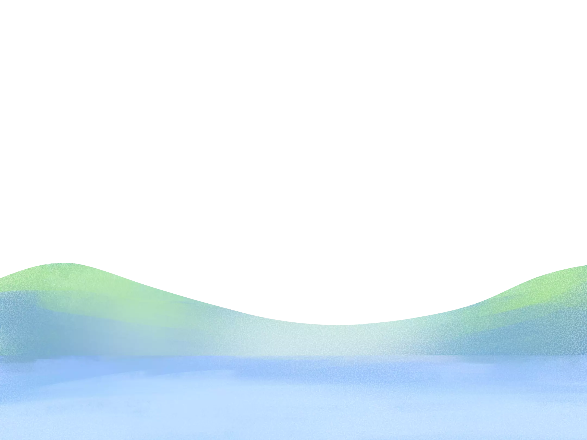
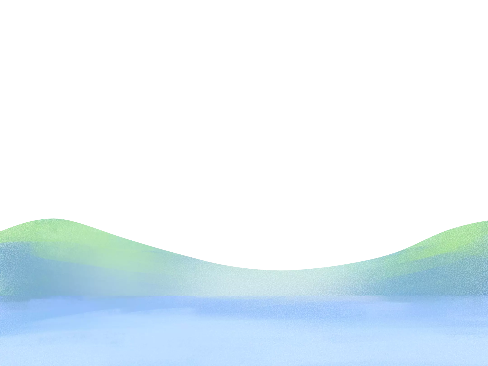

All backgrounds, images, and assets on this site are illustrated and programmed by myself! Since it's all open source, feel free to use them! If you're interested in how I made them, read this!
Hey, I'm Jayson Tian
I spend most of my time thinking about the death and regeneration of my neurons. Aside from that, I'm either playing volleyball, drawing digitally, coding, or helping out in educational initiatives.